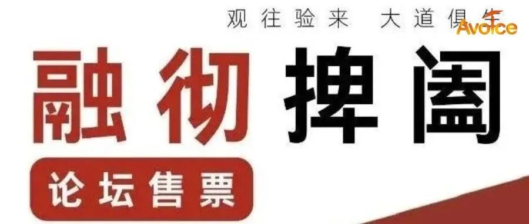
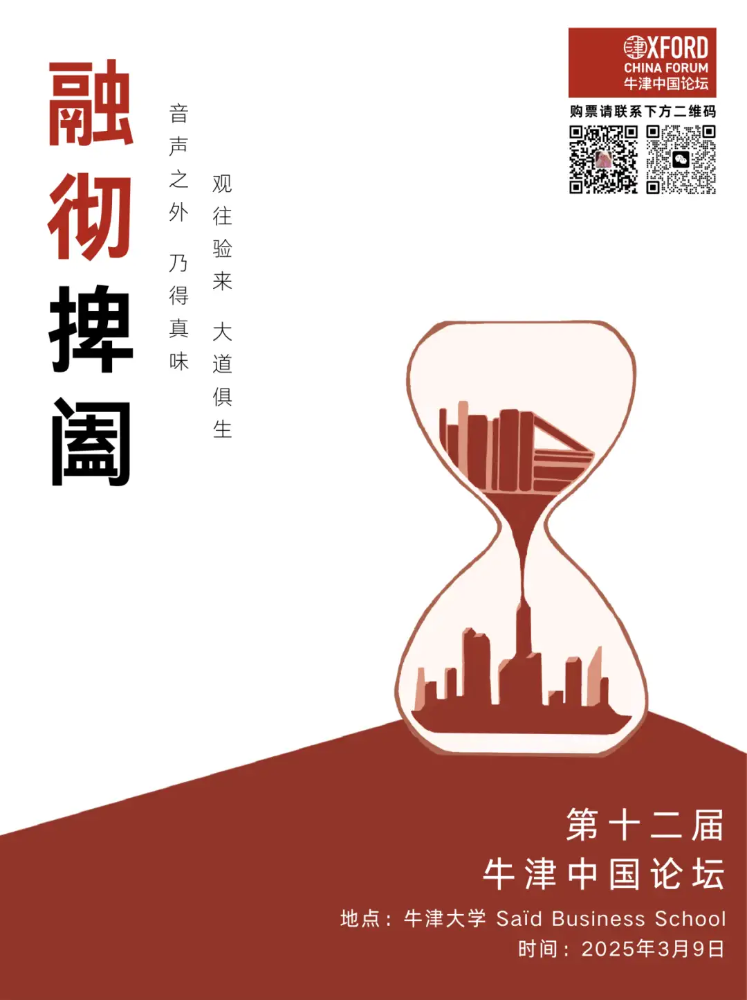
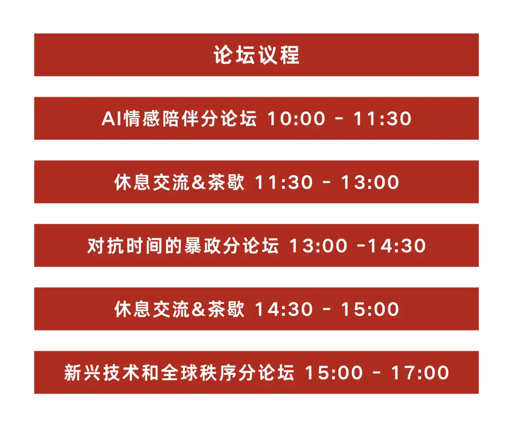
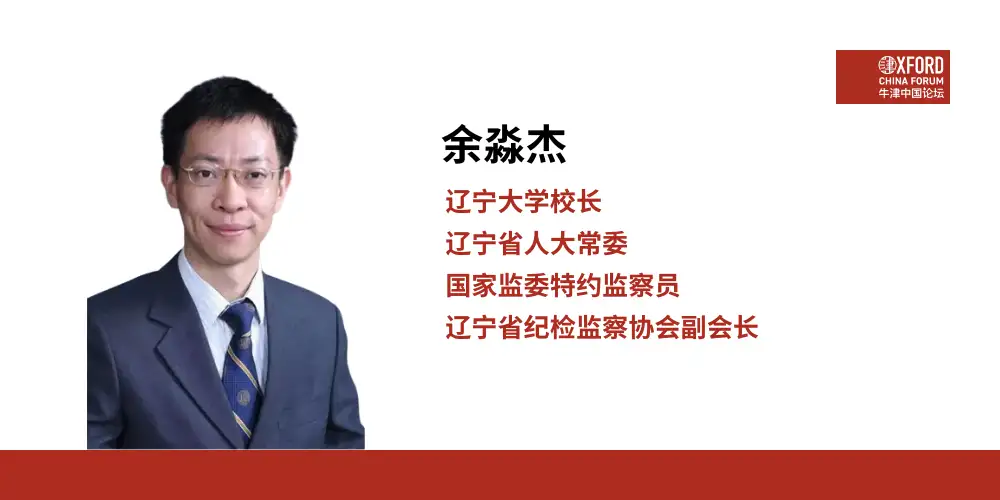
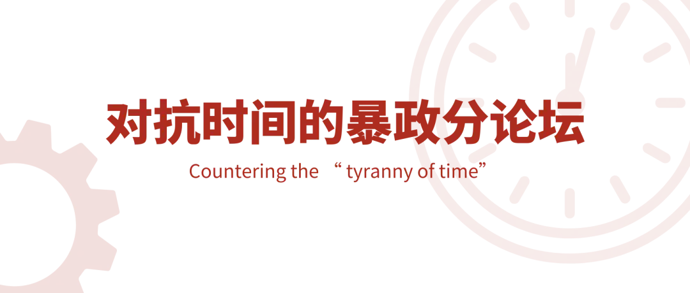
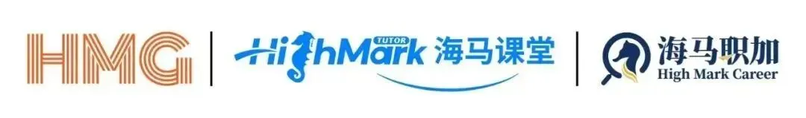
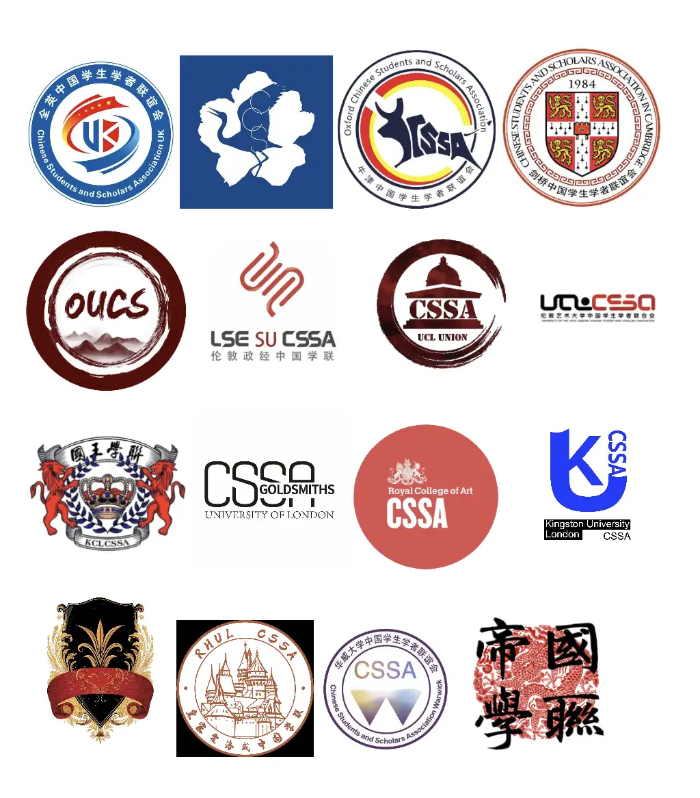
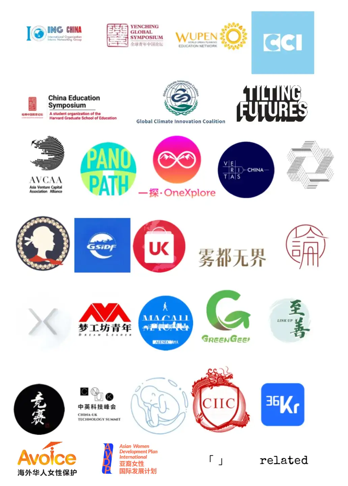
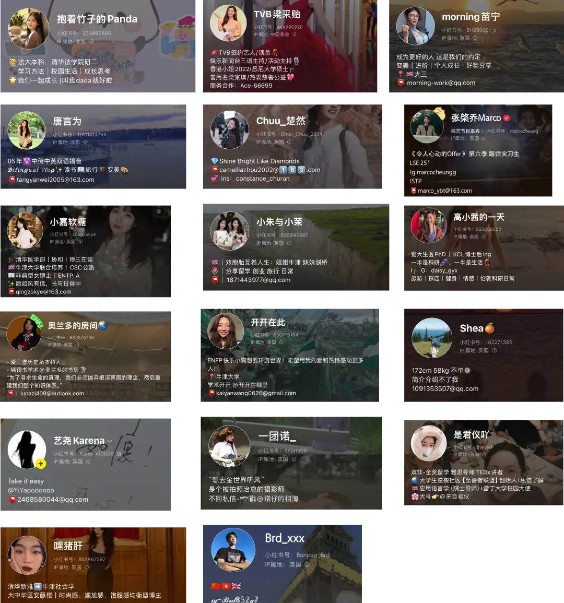
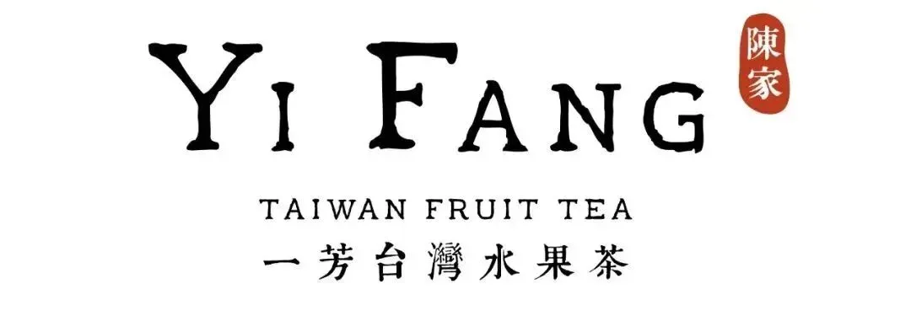

以下文章来源于OCF论坛 ，作者OCF论坛
牛津中国论坛（Oxford China Forum）是一个由牛津学生发起的年度峰会，是全英规模最大，最为严谨的中国学术论坛之一。通过邀请世界级政治家、企业家、媒体、学者进行研讨，为大众提供不同的视角以观察、理解、思考变化中的中国。



目录
1. 论坛介绍
2. 分论坛预告
3. 售票信息&观众群
4. 论坛合作
01 论坛介绍

第十二届牛津中国论坛
融彻捭阖
牛津中国论坛（OCF）成立于 2013年，如今已发展成全欧洲规模最大，最为严谨学术的中国论坛之一。历届论坛由搜狐、抖音、凤凰网等平台全球直播，累计观看人数1000万人次。在往届论坛中，我们曾有幸邀请到前联合国秘书长潘基文、澳大利亚前总理陆克文、华谊兄弟CEO王中磊、真格基金创始人徐小平、哈佛大学政治哲学家迈克尔•桑德尔、大疆董事长李泽湘、著名舞蹈家金星在内的超过300名嘉宾 。本届牛津中国论坛将赓续历届论坛精神，我们为观众的真正需求发声，并将切实回应这些期待，从牛津视角，给出中国方案。

左右滑动查看更多
2025年3月9日，欢迎各位齐聚牛津大学，或线上同步参会，在融彻捭阖之间，洞察时代变局，激荡思想交锋。本届线下论坛包括三个分论坛，时间线如下：

02 分论坛预告

论坛的主题演讲（Keynote Speeches） 将涵盖 AI 技术前沿、国际竞争、监管治理与伦理挑战等核心议题，帮助与会者理解 AI 如何塑造未来世界。圆桌讨论（Panel Discussion） 将专注于 AI 对未来工作的影响，深入探讨如何协作，推动劳动力市场平稳转型，并充分释放 AI 带来的红利。

左右滑动查看更多

从算法劳动到就业焦虑，从全球化语境下的时间观念到个体如何重建与“附近”的联系，我们将与来自心理学、经济学、社会学领域的专家一起，解构“时间的暴政”，共同打造一本当代青年的“生存手册”。
时间的规则或许难以改写，
但你，是否愿意重新定义自己的时间？
左右滑动查看更多

面对新技术带来的伦理与合规问题，我们该如何寻找用AI影响人类内心世界的边界与范式? 本次论坛，我们邀请了来自数字人文、AI与心理咨询情感计算、乙女游戏、人机交互等领域的专家学者。从人类学、哲学、心理学到 AI前沿科技，我们期待与您一起，探寻未来人类与数字生命相处的新可能。

左右滑动查看更多
2019-2021 牛津中国论坛直播/媒体负责人
牛津工程学博士（工业系统智能优化算法论文答辩中）
• 2022年，在AI图文生成与推荐算法（工业3.x）时代的新媒体，独自一人「洗（照片）剪（视频）吹（牛）」「公关危机」意外走红事件，并以 #潘周聃 及100+相关热搜标签 100亿+ views 的缘分连接你我，直到今天。
• “潘周聃说，人生旅途是一个厚积薄发的过程，现在不妨在自己感兴趣的领域多实践积累，钻研琢磨一番，穿过长长的人生隧道，到了未来的某个时间节点，会迎来光芒。” -- 「新华社通稿」
03 售票信息&观众群
论坛场地：牛津大学赛德商学院
🎟 半天论坛票 | £9.99
牛津大学校友价：£7.99
• 选择上午场或下午场参与论坛活动
• 享受茶歇及Networking Session，结识志同道合的朋友
🎟 全天论坛票 | £16.99
牛津大学校友价：£9.99
• 全天畅享论坛，聆听三场深度讨论
• 享受茶歇及Networking Session，结识志同道合的朋友
🎟 牛津文化体验票 | £39.99
• 包含全天论坛票及牛津导览
• 资深导游带领两小时深度游览牛津，领略这座历史名城的魅力
🎟 VIP观众票 | £39
•优先入场
•优先提问
• 尊享论坛VIP席位，近距离聆听嘉宾分享
🎟 VIP论坛票 | £169 （数量有限，先到先得）
两人同行立减10磅
• VIP观众票权益
• 专属接待服务，嘉宾互动机会
• 牛津中国论坛正式晚宴（Formal）门票一张
✨OCF独场：
OCF X RHODES HOUSE FORMAL
高雅盛宴之享
（滑动上方内容查看具体介绍）
！购票请扫描上方二维码 ！
扫描上方二维码加入论坛观众群
失效请联系：[email protected]
04 论坛合作
2025年牛津中国论坛商务合作伙伴

合作学联

合作组织

英国红领巾 Red Scarf作为在英留学必备平台，13年助你一站式解决生活、购物、签证及旅行需求!下载 APP或关注微信/小红书 @英国 Red Scarf，轻松薅羊毛、享攻略。
App Store 搜索下载【英国省钱快报】- 英国华人和留学必备APP，24/7更新英国新鲜折扣及演唱会热门资讯，涵盖海量特价彩妆、护肤、时尚、签证、本地生活等干货信息。省心、省力更省钱！
宣发合作伙伴

饮品特约合作伙伴

店铺地址：18 New Inn Hall St, Oxford OX1 2DW
本届牛津中国论坛采用线下与线上会场，目前皆在招商与寻求宣发合作伙伴中。商务合作伙伴权益包括称谓使用权、Logo展示、视频广告植入、社群转发、参会邀请、宣传物料、嘉宾深度联系、嘉宾邀请、个性化合作设计、相关接待等。
若您有意成为本届牛津中国论坛赞助合作伙伴，请联络【微信：AglnZ_5】进一步洽谈合作事宜。
宣发合作联络
文案：第十二届牛津中国论坛组委会
排版：孙仲远、杜飞逸
视觉：谭丹宁、杨雨馨、王艺璇、廖景新、杜飞逸
审核：曹商羽、黄韬、杜飞逸、张然、穆诺可、张亚维